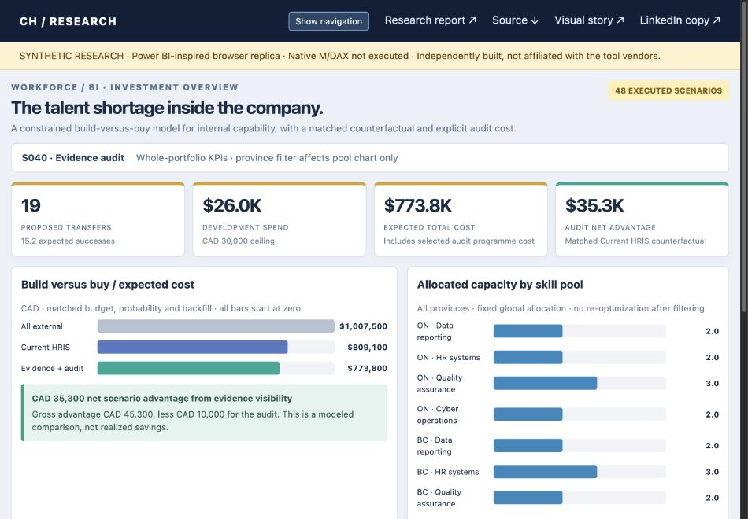
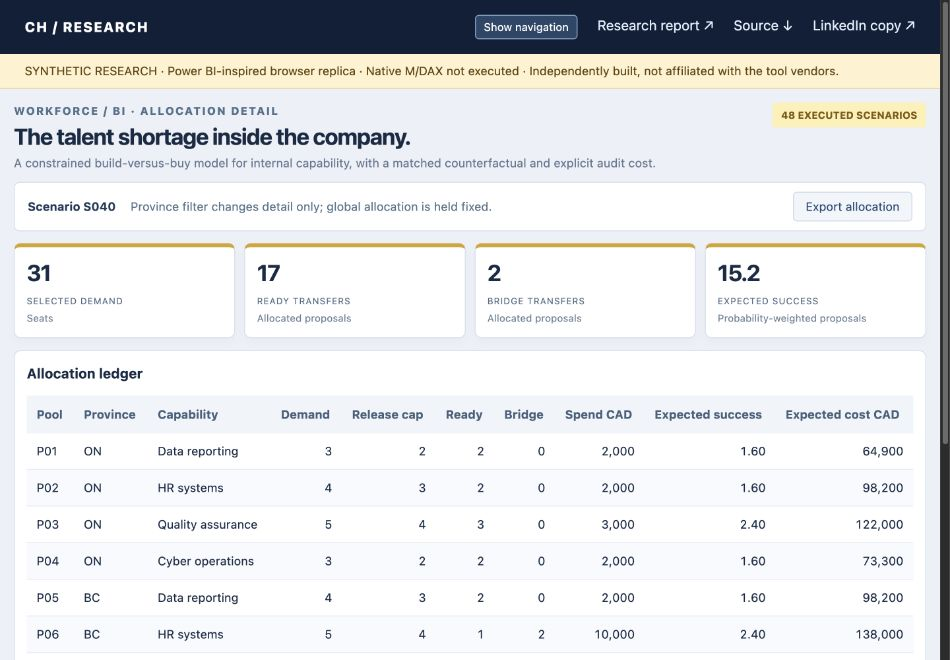

The talent shortage inside the company · Manvir Singh Judge · An end-to-end visual walkthrough
01 / Price the skills audit against a matched alternative
Scenario S040 compares the evidence audit with current HRIS visibility at the same budget, success probability and backfill cost. CAD 35,300 is a modeled net advantage after the default audit cost; the all-external benchmark answers a different question.

Download image
02 / Follow the decision to the pool ledger
Demand, manager release capacity, ready transfers and development-bridge transfers are visible together. The default allocation proposes 17 ready and two bridge moves. Expected successes are probability-weighted proposals, not observed transfers.

Download image